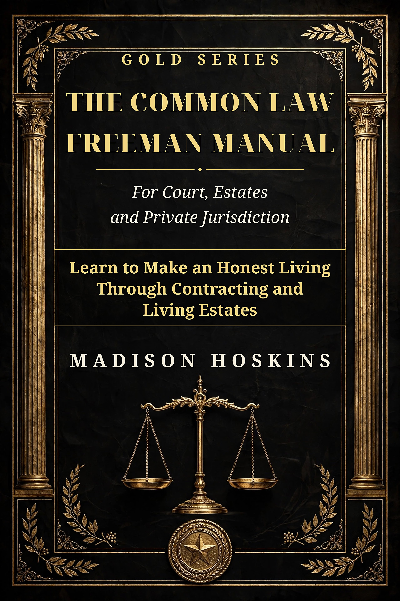

How to Build a Living Estate: New Common Law Freeman Manual Covers Court, Estates and Private Jurisdiction
The 121-page Gold Series manual teaches contracting, land trusts and EIN-based business credit — “Learn to Make an Honest Living Through Contracting and Living Estates.”

WILKES-BARRE, Pa., Nov. 9, 2026 — Families asking how to build a living estate — an estate that is organized, protected and producing while its owner is still alive to run it — now have one manual written for exactly that job. Madison Hoskins has released The Common Law Freeman Manual for Court, Estates and Private Jurisdiction, a 121-page Gold Series book that teaches contracting, common law fundamentals and estate structure in plain language. The manual is available now for $99.99.
“Most people only meet the word 'estate' at a funeral or in a courtroom,” said Madison Hoskins, the book's author. “I put this manual together from 18 years of research because an estate is something you build and manage while you're living — through the contracts you sign, the land you hold and the credit your business earns. Plain words, no shortcuts, and nothing in it I wouldn't hand to my own family.”
The manual opens with contracting fundamentals — offer, acceptance and consideration — then moves through sovereign standing and jurisdiction, the laws of the flag, and value and negotiable instruments under UCC Article 3. Its centerpiece, THE KEY, quotes 16 entries from Black's Law Dictionary, 4th Edition Revised, verbatim with their printed page numbers, so readers check the source instead of trusting a summary.
The real estate section teaches land trusts and land banks, how to work a county recorder's office to research foreclosure and tax-sale properties, and the county repository ladder — upset sale, judicial sale, then repository — that most beginners never learn exists. Every step is taught with the actual offices, forms and order of operations a first-time researcher will meet at the courthouse. Readers who want to build a land trust step by step are pointed to Build A Trust 24, the companion Gold Series platform.
On the business side, the book teaches creating value through corporations and how to build business credit with an EIN the straight way: a DBA registration, a free EIN from the IRS, a DUNS number, and trade lines that actually report — with a plain warning that a DBA alone creates no separate legal entity or credit profile.
The manual also protects readers from the lane's own scams. A full section, “Stop Getting Scammed by UCC-1 Processors,” breaks down what a UCC-1 filing is and is not, and the book warns readers directly about CPN scams and the numbers sold under that name. A built-in AI prompt bank closes the drafting chapters, paired with a mandatory proof-check list so no AI-drafted document goes out unverified.
The capstone, “THE MILLION DOLLAR ROADMAP,” lays out the full sequence — trust structure, insurance, contracting income and real estate — with every figure framed as a target to work toward, never a promise.
The manual is written for contractors, landlords, small business owners and families building generational wealth who want common law and private jurisdiction taught as working knowledge, not theory. No law degree is assumed; every term the manual relies on is defined from the source before it is used. Companion Gold Series titles include Traveling vs. Driving, and the free L.A.W. — Land · Air · Water course is open to every reader.
Availability
The Common Law Freeman Manual for Court, Estates and Private Jurisdiction is available now at https://privatemoneyrightsplaybook.xyz/freeman-manual.html for $99.99.
About the Gold Series
The Gold Series is the book line of Private Money Rights Playbook, publishing practical, plain-language manuals on contracting, trusts, estates and private business from Wilkes-Barre, Pennsylvania.
Educational only, not legal advice — if you don't have the knowledge of a lawyer, consult a lawyer. Void where prohibited by law.
Written by human, assisted by AI.